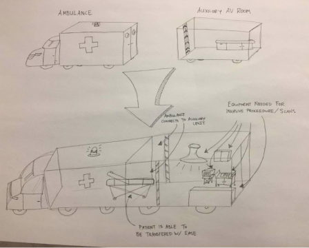

Automating the health field
Autonomous vehicles to benefit health
Teammates
Inaara Charolia
Joseph Fajnor
Julia Liang
Varna Vasudevan (Mentor)
Duration
Fall 2017 (9 weeks)
Role
Design Consultant
Tools
Adobe Illustrator
Autodesk Fusion 360
Figma
InDesign
Background
Our team from Berkeley Innovation collaborated with Ford Motor Companys advanced Driverless User Experience (DUX) team. We were challenged to envision the future of autonomous vehicles (AV) within the medical space, researching and discerning potential uses for the AVs.
Given the scope of the project, we initially began by exploring a variety of potential user problems to address.
How might we utilize autonomous vehicles in the medical space?
Research
We conducted extensive research using a variety of methods including desktop research, surveying, as well interviewing both medical patients and professionals.
Desktop Research
Before delving into user research, we looked into groups to design solutions for as well as the current automotive vehicle advances. We also explored how individuals feel about autonomous vehicles.
Surveys
We conducted a survey to find pain-points regarding the patient experience and hear stories about peoples medical experiences. Overall, our motivation was to find pain points as well as learn about what makes a positive or negative medical experience.
Interviews
We interviewed several people from the surveys as well as medical professionals around the bay, including: Berkeley Free Clinic, Needle Exchange, Disabled Students Program, UC Berkeley, Alzheimers Services, East Bay
Insights
Given the various directions our project could take within the medical space, our initial research covered a range of issues from mobility to anonymity. From our initial research, we found that:
1. Maintaining an individuals agency is crucial, particularly for those with mobility/disability issues
2. Human interaction could deter a large group of people who want to be screened or tested
3. Long wait times are a common issue; however, people want more time spent on them by the doctor to answer questions and explain their options
4. Severity of the medical issue is the largest indicator for people to seek help
5. Mobile clinics are effective in reaching out to more people and in reducing costs
Julia and I organizing some of the insights from research.
Personas
We took the insights and surveys to generate personas we could focus on. We would have liked to explore more perspectives, but we had to cut down in order to keep on the timeline.
Personas we removed
Person with financial barriers
Doctor/Nurse
Young person (under 18)
Personas we kept
Person with mobility issues
Healthcare director/coordinator
Person seeking anonymity
Ideation
As we began to brainstorm the potential for AV in healthcare, we began by synthesizing our research by breaking down the needs for each persona into one-word concepts. We then brainstormed a variety of potential concepts/features by referencing these the one-word needs for each of our personas.
Synthesized Research & Needs
Brainstormed Concepts & Features
Problem/Journey Maps
We developed problem/journey maps for our various personas. In doing so, we were able to highlight opportunities for the various pain points the individuals faced and get a better grasp of the scope of each issue.
Journey maps:
Problem map:
Initial Concepts
We fleshed out initial concepts that would address the pain points for the personas. From the initial concepts, we ultimately chose to further explore a solution that would combine some elements seen in these initial concepts. We chose to pursue the structure of AV Bathroom testing (seen below) and develop a mobile clinic, honing in on the needs for our anonymous tester persona, as this proved to be the most scalable.
Concept 1: AV Taxi
AV cars to pick up patients:
·Designed with consideration of disability needs (e.g. voice recognition)
·Completes pre-appointment aspects (like paperwork) beforehand, also with consideration of disability needs (e.g. braille, reading text)

Concept 2: Auxillary Ambulance
Extends ambulance:
·Parks anywhere and extends workspace for existing ambulances
·Has equipment for invasive procedures
·Scanning/testing capabilities
Concept 3: AV Restroom Testing
Combining restrooms and testing:
·Restrooms with anonymity for those who desire to get tested
·User can register specify test beforehand
Concept 4: AV "Drive-Thru"
AV cars to pick up patients:
·Addresses pain point mobility individuals face for traveling by car
·Designed with consideration of disability needs (e.g. voice recognition)
·Completes pre-appointment aspects (paperwork)beforehand, also with consideration of disability needs (e.g. braille, reading text, etc)
Modular system:
·Components of clinic are removable => increases uptime & usability
·Specific rooms for testing to transport equipment
·Fleets to go to emergency locations where more medical attention needed
Concept 5: Modular AV Clinics
Attachable clinic in hospital parking lot:
·Provides a space for low severity patients and regular checkup
·Allows for hospitals and doctors offices to be less clogged through patient dispersion
Modular system:
·Each clinic can be attached and detached or moved around
·Could be sent to another hospital who has a high amount of appointments that day
·Could be sent near an emergency to help treat low severity patients
Iterations
We furthered our explorations of the AV concept and the mobile clinic experience. We iterated on each aspect of the final solution based on additional user testing and research.
Autonomous Vehicle
After choosing to explore the AV Bathroom testing concept and honing in on the needs of the anonymous tester, we ran into a number of issues. Originally, we considered placing the testing within another public utility (a bathroom) to achieve anonymity. However, when considering maintaining the sanitary standards in the stalls as well as maintaining anonymity when some stalls were only for testing (especially in crowded settings), we chose to go another direction.
We shifted our approach and began to envision the AVs structure itself as providing a variety of uses, with one use case being a mobile clinic. We took inspiration from the stalls of the initial concept and developed a modular AV where components could be swapped to meet a variety of client needs. When considering the needs of the anonymous tester, this direction would still maintain the users anonymity as all patients at the clinic would go through the same check-in and check-out procedures.
We began to explore the potential of each component working as a standalone pod, with the AVs being seperate devices that help transport these stationary pods. In order to provide a variety of use cases, these pods could connect with other pods to customize expanded spaces.
Mobile Clinic Experience
We first began to explore the mobile clinic experience by discerning the way the user would navigate the space. We initially considered having some sort of expandable space, but ultimately discerned that using the pods to expand the space would be more effective.
We then began to explore the users experience within the space itself. Based on user research, many patients expressed concerns with time wasted and lack of clarity when leaving the doctors office. As such, we developed a check-in/check-out process to optimize time efficiency and provide the user with a summary of the visit.
The kiosk would guide the user through the check-in and check-out process, while the card is used to enter the rooms and track the visit. We user tested this process by setting up a physical user experience for the clinic, with a waiting room and patient room.
From conducting the user testing with the physical and digital interface, we learned that the card system was difficult to understand for many users. We began to iterate on the process for the user and chose to develop a system that would better assist in creating clear cues for the user.
Refinement + Final Deliverables
After working through a variety of concepts and user testing, we developed refined deliverables for the autonomous vehicle and mobile clinic experience. We highlighted the key interactions